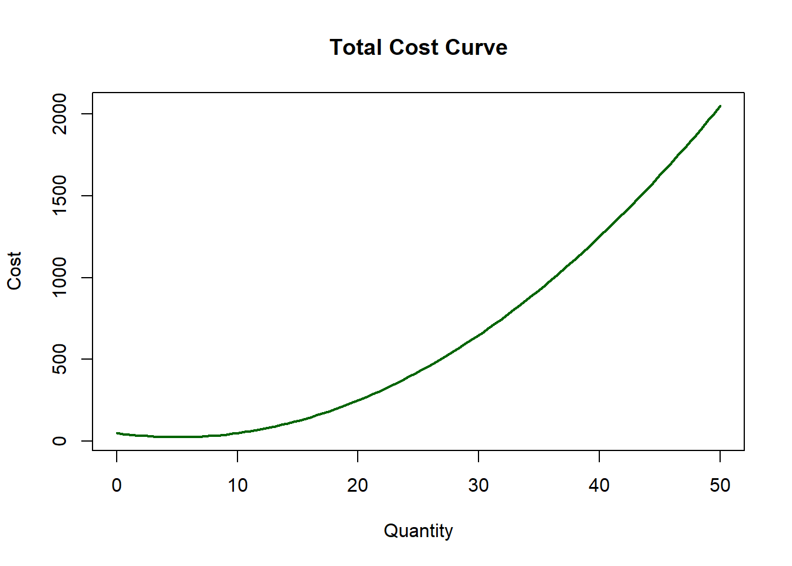

7 Partial Derivatives
7.1 Cobb-Douglas Production Function
\(Q(L,K) = L^\alpha * K^\beta\)
Q(L,K) = L^\alpha * K^\beta
We have to specify that the coefficients, \(\alpha\) and \(\beta\) be treated as constants to get the right differential.
We define our production function
7.1.0.1 Partial Derivatives: Marginal Products
- Marginal Product of Labor is the additional output produced by one more unit of labor, holding capital constant.
## function (L, K, alpha, beta)
## alpha * K^beta * L^(alpha - 1)- Marginal Product of Capital is the additional output produced by one more unit of capital, holding labor constant
## function (L, K, alpha, beta)
## beta * K^(beta - 1) * L^alpha7.2 Utility Function
Say we have the following utility function:
\(U(x,y) = x^{\gamma}y^{\delta}\)
U(x,y) = x^{\gamma}y^{\delta}
where gamma is 0.35 and delta is 0.65
7.3 Visualizing Functions with ggplot2
7.3.1 Pre-plotting Check
In some cases, ggplot2 does not run. This can be brought by package mismatch, so, we need to double-check that everything is working properly.
user <- file.path(Sys.getenv("USERPROFILE"), "R", "win-library", "4.5")
dir.create(user, recursive = TRUE, showWarnings = FALSE)
.libPaths(c(user, .libPaths()))
ok <- tryCatch({
library(ggplot2)
ggplot(data.frame(x=1:5, y=rnorm(5)), aes(x,y)) + geom_point()
TRUE
}, error = function(e) FALSE)
if (!ok) {
install.packages("rlang", lib = user_lib)
ok <- tryCatch({
library(ggplot2)
ggplot(data.frame(x=1:5, y=rnorm(5)), aes(x,y)) + geom_point()
TRUE
}, error = function(e) FALSE)
}
if (!ok) plot(1:5, rnorm(5))If it is not working, we will use Base R, so go to Base R.
7.3.2 1. Plotting a Single Function
We load the ggplot2 package to make plots.
7.3.2.0.2 b. Create values for Q
We create a sequence of numbers using seq(), 0, 50 the start and end of the sequence while length.out=100 creates 100 numbers evenly spaced between 0 and 50. If you have more points with the length.out the curve will be smoother when we do the plotting.
7.3.2.0.3 c. Create data frame for plotting
data.frame() creates the table of data
Q=Q_vals is the column that is created. We store all the quantities (from 0 to 50)
TC = TC(Q_vals) is the column for TC storing the total cost for each Q.
7.3.2.0.4 d. Plotting the curve
You might get worried because there are warnings that will appear, however, those are not really worrisome. If you do not want to be stressed, you can remove the warnings. You can do that by adding in the code chunk where you can see {r}, {r, warning=FALSE}.
library(ggplot2)
p1<-ggplot(df_tc,
aes(x = Q,
y = TC)) +
geom_line(size = 1.2, color = "darkgreen")+
labs(title = "Plot of Total Cost Curve", x = "Q", y= "Cost")+
theme_minimal()
print(p1)
i. ggplot(df_tc, aes(x = Q, y = TC))
This starts the plot using the
df_tcwe created as the data.aes(x = Q, y = TC)tells R that you are puttingQon the x-axis andTCon the y-axis
ii. geom_line(size = 1.2, color = "darkgreen")
This draws our line connecting all points (Q, TC)
size = 1.2means thicker line than the default of 1.color = "darkgreen"is the line color. You can experiment. So, if the color you want will not appear, ggplot does not have it.
iii. labs(title = "Plot of TC", x = "Q", y = "Cost")
- This adds labels like the title and axis names
iv. theme_minimal()
- Makes the plot cleaner and simpler, with less clutter.
7.3.2.1 Base R Plotting
options(scipen = 999)
p1.1<-plot(df_tc$Q, df_tc$TC, type = "l", col = "darkgreen", lwd = 2,
main = "Plot of Total Cost Curve",
xlab = "Q",
ylab = "Cost"
)
## NULLi. options (scipen=999) is added because unlike ggplot2, Base R tends to use scientific notation. It does not look that nice, so, to avoid that, add this.
ii. plot(df_tc$Q, df_tc$TC) portion is the aes portion in ggplot2.
type = "l", col = "darkgreen", lwd = 2so this makes the plot a line graph, color is dark green and the line width is thicker,The other parts are the labels.
7.3.3 2. Multiple Functions in One Plot (MC and AC)
We already have our MC and AC functions. We also have Q_vals too.
7.3.3.0.2 b. Prepare the data in long format for ggplot
ggplot2 prefers long format which looks like this:
| Q | Value | Type |
|---|---|---|
| 0 | 10 | MC |
| 0.1 | 12 | MC |
| … | … | MC |
| 0 | 15 | AC |
| 0.1 | 14 | AC |
| … | … | AC |
dfc<-data.frame(
Q = rep(Q_vals, 2),
Value = c(MC(Q_vals), AC(Q_vals)),
Type = rep(c("MC", "AC"), each = length(Q_vals))
)rep(Q_vals, 2)repeat Q for both curvesValueis so that MC and AC values are stackedTypetellsggplotwhich line is which
7.3.3.0.3 c. Plotting AC and MC
library(ggplot2)
p2<-ggplot(dfc, aes(x = Q, y = Value, color = Type, linetype = Type, size = Type)) +
geom_line() +
scale_linetype_manual(values = c("MC" = "dashed", "AC" = "solid")) +
scale_color_manual(values = c("MC" = "pink", "AC" = "purple")) +
scale_size_manual(values = c("MC" = 1, "AC" = 1.5)) +
labs(title = "MC and AC Curves", x = "Q", y = "Cost") +
coord_cartesian(ylim = c(0, 100)) +
theme_minimal()
print(p2)
i. aes(color = Type, linetype = Type, size = Type
- automatically maps line style
ii. coord_cartesian(ylim = c(0,100))
- This zooms the y-axis without cutting the data.
iii. Specifying the line style using scale_linetype_manual instead of letting R do the lines. So, AC is set as the solid line and MC is set as the dashed line. scale_color_manual specifying the color per line. scale_size_manual specifies the thickness of the lines.
- Inside the parenthesis for all, you have to add
c()because you have a “collection” of curves.
iv. labs for the labels and theme_minimal() for a clean look.
7.3.3.1 Base R Plotting
options(scipen = 999)
y_min <- 0
y_max <- 100
p2.1<-plot(dfc$Q, dfc$Value, type = "n",
xlab = "Q", ylab = "Cost",
ylim = c(y_min, y_max),
main = "MC and AC Curves")
lines(dfc$Q[dfc$Type == "AC"], dfc$Value[dfc$Type == "AC"],
col = "purple", lwd = 2, lty = 1)
lines(dfc$Q[dfc$Type == "MC"], dfc$Value[dfc$Type == "MC"],
col = "pink", lwd = 2, lty = 2)
legend("topright", legend = c("AC", "MC"),
col = c("purple", "pink"), lwd = c(2,2), lty = c(1,2))
## NULLi. plot(dfc$Q, dfc$Value, type = "n" creates the plot, much like the aes
ii. the labels are then added, alongside the ylim which is the equivalent of coord_cartesian in ggplot2
iii. lines(...) draws each curve individually, the lty is the line type, (1 for solid, 2 for dashed), lwd is line thickness, col is color, the legend adds legend to match colors and line types manually.
7.3.4 3. Multiple Functions in One Plot (MR, MC, AC)
7.3.4.0.1 a. Getting TR and MR
Let us define the price as a function of Q:
We get the Marginal Revenue that is the derivative of TR
7.3.4.0.2 b. Prepare the data
df3<-data.frame(
Q=rep(Q_vals,3),
Value=c(MC(Q_vals), AC(Q_vals), MR(Q_vals)),
Type = rep(c("MC", "AC", "MR"), each = length(Q_vals))
)The only difference is that we now have three curves: MC, AC, and MR.
7.3.4.0.3 c. Plot MC, AC, MR
p3<-ggplot(df3,
aes(x = Q, y = Value, color = Type, linetype = Type, size = Type)) +
geom_line() +
scale_color_manual(values = c("MC" = "pink", "AC" = "purple", MR = "skyblue")) +
scale_linetype_manual(values = c("MC" = "dashed", "AC" = "solid", "MR" = "dotdash")) +
scale_size_manual(values = c("MC" = 1, "AC" = 1.5, "MR" = 1)) +
labs(title = "MC, AC, and MR Curves", x = "Q", y = "Cost / Revenue") +
coord_cartesian(ylim = c(0, 120)) +
theme_minimal()
print(p3)
7.3.5 Base R Plotting
options(scipen = 999)
y_max1 <- 120
p3.1<-plot(df3$Q, df3$Value, type = "n",
xlab = "Q",
ylab = "Cost / Revenue",
ylim = c(y_min, y_max1),
main = "MC, AC, and MR Curves")
lines(df3$Q[df3$Type == "AC"],
df3$Value[df3$Type == "AC"],
col = "purple", lwd = 2, lty = 1)
lines(df3$Q[df3$Type == "MC"],
df3$Value[df3$Type == "MC"],
col = "pink", lwd = 2, lty = 2)
lines(df3$Q[df3$Type == "MR"],
df3$Value[df3$Type == "MR"],
col = "skyblue", lwd = 2, lty = 4)
legend("topright",
legend = c("AC", "MC", "MR"),
col = c("purple", "pink", "skyblue"),
lwd = c(2, 2, 2),
lty = c(1, 2, 4))
## NULLi. y_max1 was created as a new object for our y-axis.
ii. Similar to the plot before, we create an empty plot with Q set for our x-axis and Value set for our y-axis.
iii. We have similar lines(...) except for the MR which has lty=4 for a DotDash line.
iv. Again, we manually add the legend unlike ggplot2
MR usually starts equal to price at Q=0 and slopes downward faster than demand.
MC and AC are cost curves
Where MR=MC, the profit-maximizing quantity occurs
4. Multiple Functions in one plot (FC, Price, MR, MC, AC)
We have multiple functions now!
Take note that Fixed Cost (FC) is constant; Break-Even is where Price=AC while Profit is:
\(\pi(Q) = TR - TC\)
piis\pia. Define the functions
FC is a constant, assuming it is 20. For Profit, we need to get the profit for any level of output Q, not
Q_valsbecause we want the function to accept any Q.b. Prepare the Data
df_all<-data.frame( Q=rep(Q_vals,5), Value=c(MC(Q_vals), AC(Q_vals), MR(Q_vals), rep(FC, length(Q_vals)), P(Q_vals)), Type = rep(c("MC", "AC", "MR", "FC", "Price"), each = length(Q_vals)) ) #Check using View(df_all)In creating the data frame, the unique thing here is the
FC, since it is constant and we want to see a long horizontal line, the value of FC carries over from 0 to 50 as 20.c. Plot All Functions
ggplot(df_all, aes(x = Q, y = Value, color = Type, linetype = Type, size = Type)) + geom_line() + scale_color_manual(values = c("MC"="red", "AC"="purple", "MR"="blue", "FC"="orange", "Price"="black")) + scale_linetype_manual(values = c("MC"="dotdash", "AC"="dashed", "MR"="dotdash", "FC"="solid", "Price"="solid")) + scale_size_manual(values = c("MC"=1.5, "AC"=1.2, "MR"=1.5, "FC"=1, "Price"=1)) + labs(title = "MC, AC, MR, FC, Price Curves", x = "Q", y = "Cost / Revenue") + coord_cartesian(ylim=c(0, 150)) + theme_minimal()
Base R Plotting
plot(Q_vals, MC(Q_vals), type="l", col="red", lty=6, lwd=2, xlab="Q", ylab="Cost / Revenue", ylim=c(0,150), main="MC, AC, MR, FC, Price Curves") lines(Q_vals, AC(Q_vals), col="purple", lty=2, lwd=2) lines(Q_vals, MR(Q_vals), col="blue", lty=6, lwd=2) lines(Q_vals, rep(FC, length(Q_vals)), col="orange", lty=1, lwd=2) lines(Q_vals, P(Q_vals), col="black", lty=1, lwd=2) legend("topright", legend=c("MC","AC","MR","FC","Price"), col=c("red","purple","blue","orange","black"), lty=c(6,2,6,1,1), lwd=c(2,2,2,2,2))
Saving the Plots for Copy-Paste in Word/Google Docs
We use
ggsaveto save our plot,filenameis the name of the file,plotis the plot we want to save,width, heightsize in inches,dpi=300is the print-quality resolution (keep this as is!)
7.4 Interpretation Guide:
- MC = MR
- This is the profit-maximizing quantity.
- Price > AC
- Firm is making a profit
- Price < AC
- Firm incurs a loss
- Intersection of AC and Price
- This is the break-even point
- AC above Price
- Helps identify economies of scale; meaning, check if firm has to increase production to reduce AC.
7.5 Mini-Exercise
Differentiate the following:
a. \(h(x) = 2x^{1/8} + 10\)
b. \(C(\gamma) = \gamma^{1+ln(\gamma)}+ln(\gamma)\)
c. \(f(\theta) = \sqrt{\sqrt{\sqrt{\sqrt{\theta+1}}}}\)
d. \(f(x)=8x^7+7x^6+6x^5+5x^4+4x^3+3x^2+2x+1\) (Until 5th order)
A firm faces the total revenue \(TR = 135Q - Q^2\)
a. Find MR in terms of Q
b. What are TR and MR if Q is 45?
c. If \(TC = 0.5Q^2 + 5Q + 550\)
What is MC and AC?
d. What are TC, MC, and AC if Q is 45?
From MR in B.2. and MC in C.2., what can you say about the firm’s profit? Should they produce more?
Using TR and TC from the previous numbers, Visualize the MR, MC, and AC curves in one plot;
a. Q_vals should be until 60
b. MC should be Dashed and the favorite color of Partner A.
c. MR should be DotDashed and color should be the favorite color of Partner B.
d. AC should be Solid Thick line and color is Partner A + Partner B combined.
d. Label the axes; y-axis as Cost/Revenue; x-axis as Quantity (Q)
e. Label the plot as “MC, AC, and MR Curves”
At what point do you see is the profit-maximizing quantity?